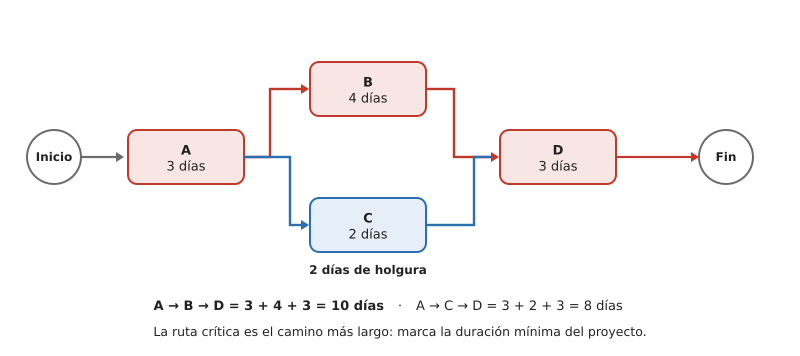

Contenido
Qué añade PERT/CPM al Gantt
El Gantt muestra cuándo ocurre cada tarea, pero no deja ver con claridad qué tareas no pueden retrasarse sin retrasar todo el proyecto. Para eso usamos PERT/CPM, una técnica que representa el proyecto como una red de actividades y calcula la ruta crítica.
- PERT (Program Evaluation and Review Technique): modela las relaciones entre tareas.
- CPM (Critical Path Method): calcula el camino crítico, la secuencia de tareas más larga, que determina la duración mínima del proyecto.
¿No bastaba con el Gantt?
En proyectos pequeños, como los ejemplos que has visto, la ruta crítica casi se ve a ojo en el Gantt. El problema llega cuando hay muchas tareas con dependencias cruzadas: ahí ya no se puede «ver a ojo» cuál es la cadena más larga. PERT/CPM permite calcular de forma exacta la ruta crítica y la holgura de cada tarea (un número concreto de días), algo que el Gantt no te da directamente.

Cómo se lee la red
- Rectángulos (nodos): cada uno es una actividad o tarea, con su nombre y su duración.
- Flechas: indican las dependencias (precedencia): la actividad de la que sale debe terminar antes de que empiece la siguiente.
- Círculos de Inicio y Fin: marcan el principio y el final del proyecto.
- En rojo: las actividades de la ruta crítica (las que no tienen holgura).
Nota
Esta es la forma actividad‑en‑nodo (la tarea va dentro del rectángulo), la más sencilla y la que usaremos. Quizá veas en otros sitios la forma clásica actividad‑en‑flecha, donde las flechas son las actividades y los círculos son sucesos (instantes) numerados: es lo mismo representado al revés.
Conceptos clave
- Camino: cualquier secuencia de tareas desde el inicio hasta el fin.
- Duración de un camino: suma de las duraciones de sus tareas.
- Ruta crítica: el camino más largo. Sus tareas son críticas: si una se retrasa, el proyecto entero se retrasa.
- Holgura: margen que tiene una tarea no crítica para retrasarse sin afectar al final.
Ejemplo resuelto
Con la red de arriba hay dos caminos:
- A → B → D = 3 + 4 + 3 = 10 días
- A → C → D = 3 + 2 + 3 = 8 días
La ruta crítica es A → B → D (10 días): es la duración mínima del proyecto. La tarea C tiene una holgura de 10 − 8 = 2 días (puede empezar hasta 2 días más tarde sin retrasar el proyecto).
Idea para recordar
La ruta crítica te dice dónde poner la atención: en esas tareas no hay margen. En las tareas con holgura sí puedes reorganizar recursos si surge un imprevisto.
Tarea evaluable — Red PERT/CPM con herramienta digital
Documentación técnica: red PERT/CPM
TRABAJO INDIVIDUAL cada persona entrega el suyo
Esta tarea se evalúa como documentación técnica (igual que el Gantt de la sesión anterior). Trabaja con el mismo proyecto, la estación meteorológica:
| Tarea | Duración (días laborables) | Depende de |
|---|---|---|
| A Definir requisitos | 2 | — |
| B Conseguir materiales | 2 | A |
| C Diseñar el soporte | 4 | A |
| D Montar el circuito | 3 | B |
| E Fabricar el soporte | 2 | C |
| F Integrar y probar | 3 | D y E |
| G Documentar y presentar | 2 | F |
Qué tienes que hacer:
- Dibuja la red PERT/CPM (nodos = tareas, flechas = dependencias) en diagrams.net (online, sin instalar nada y sin cuenta).
- Calcula la duración de cada camino y señala la ruta crítica.
- Indica la holgura de las tareas no críticas.
- Exporta el diagrama a PNG y súbelo a la tarea Red PERT/CPM de Moodle: esa entrega es individual y es la que se evalúa.
Tarea del proyecto
La red PERT/CPM de vuestro proyecto
TRABAJO EN EQUIPO una sola entrega por equipo
Con las mismas tareas que pusisteis en vuestro Gantt de la S4 —no otras—, dibujad la red del proyecto del equipo y añadidla a la plantilla del plan de proyecto (enlace en la portada):
- Dibujad la red en diagrams.net: un nodo por tarea con su duración, flechas para las dependencias y los círculos de Inicio y Fin.
- Calculad la duración de cada camino y señalad la ruta crítica.
- Indicad la holgura de vuestras tareas no críticas.
- Exportad a PNG, insertadlo en el plan y anotad la duración mínima que os sale.
Si el resultado no cuadra con lo que suponíais al hacer el Gantt, decidlo en el plan: descubrir que la ruta crítica no era la que creíais es exactamente para lo que sirve PERT/CPM.
Ejercicios
Recuerda
TRABAJO INDIVIDUAL cada persona entrega el suyo
Resuelve primero en el cuaderno y luego pasa tus respuestas a tu copia de la plantilla en Drive (la que creaste desde la portada). Al terminar la unidad, descarga la plantilla en PDF (Archivo → Descargar → Documento PDF) y súbelo a la tarea Ejercicios de la unidad de Moodle. La tarea está abierta desde la primera sesión, pero no pulses «Entregar» hasta la última: es un solo documento con los ejercicios de las nueve.
- En el ejemplo, si la tarea B pasara a durar 6 días, ¿cuál sería la nueva ruta crítica y la duración del proyecto?
- ¿Puede un proyecto tener dos rutas críticas a la vez? Razónalo.
- Calcula la holgura de la tarea C si D pasara a durar 5 días.
Test
Trabaja sobre la red del ejemplo resuelto: A → B → D = 10 días y A → C → D = 8 días.